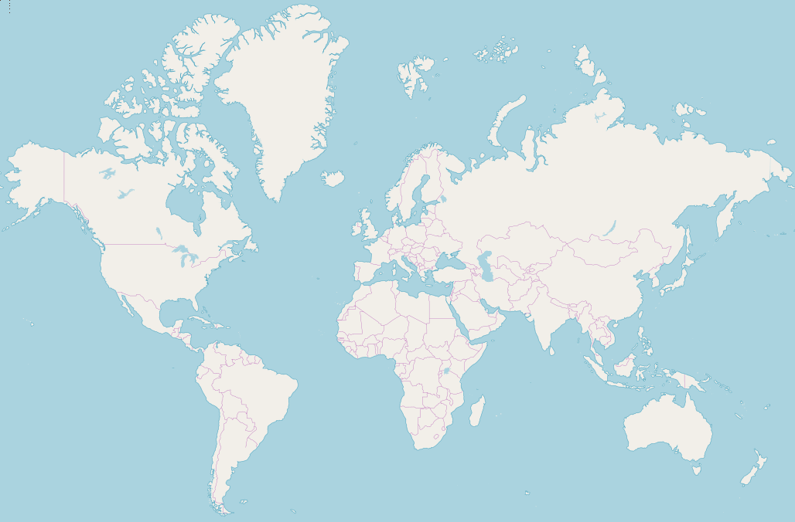
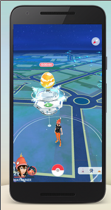
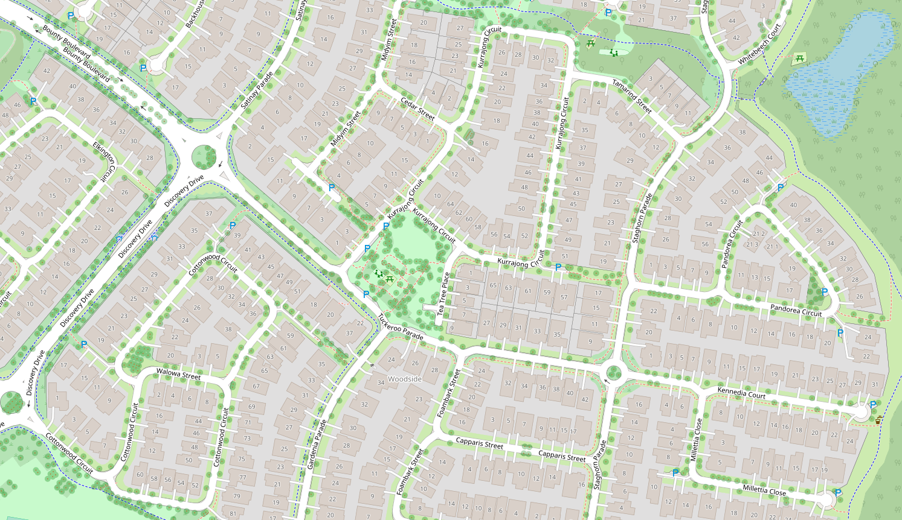
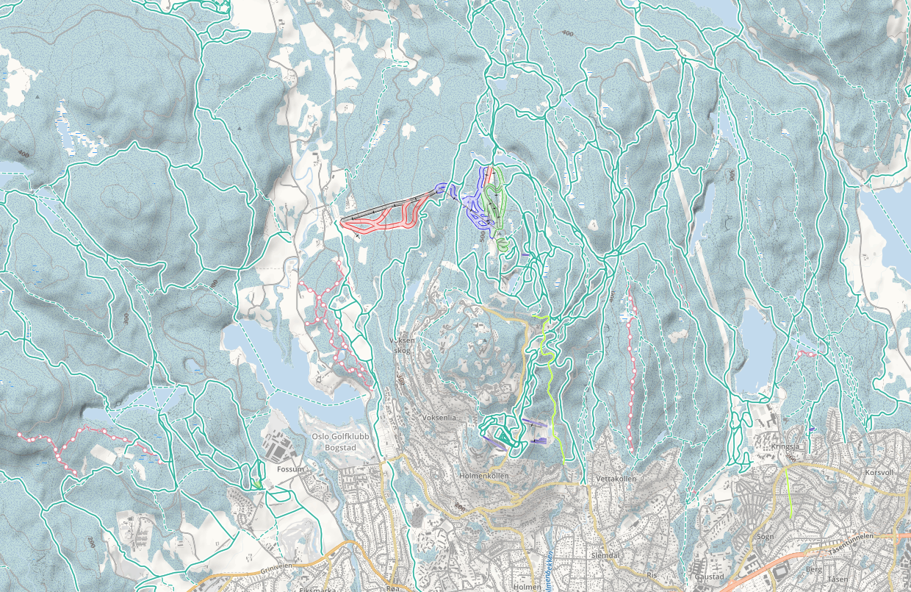
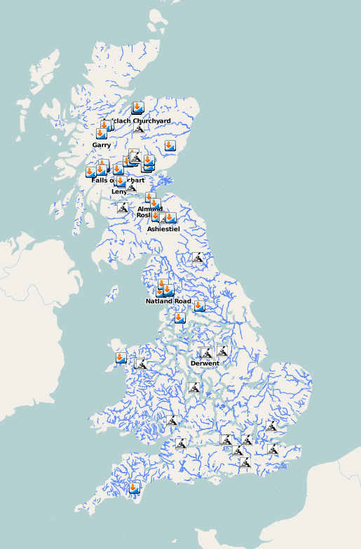
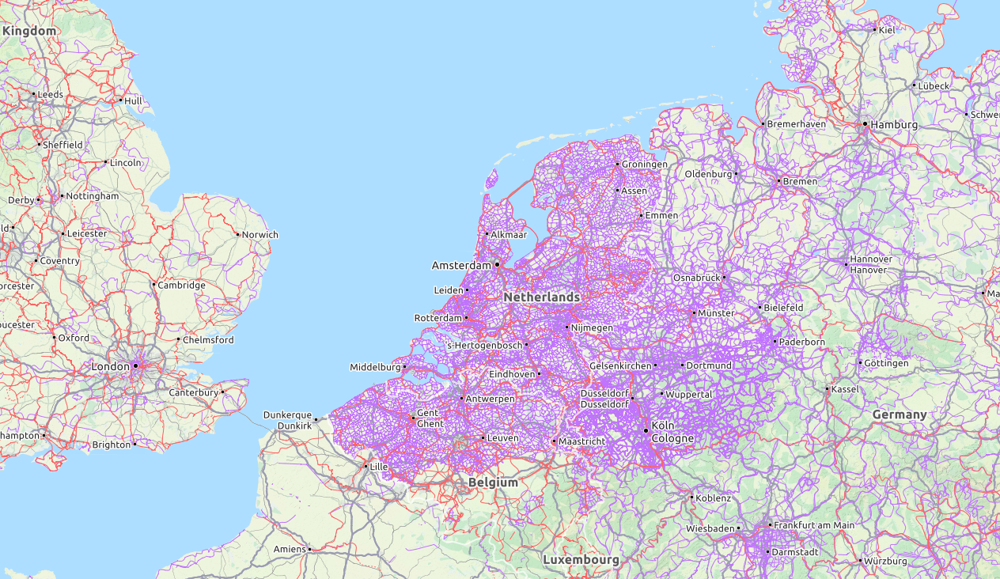
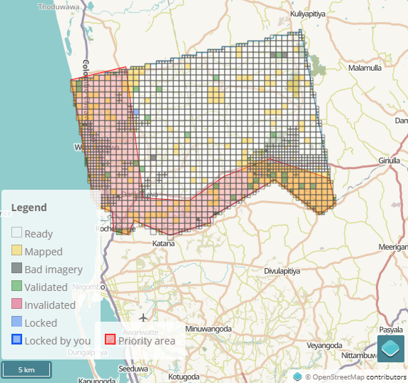
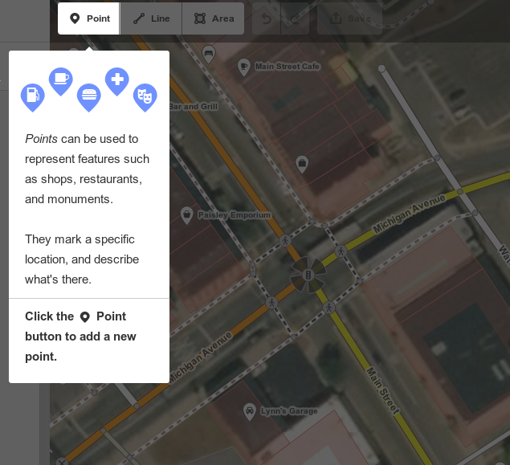

Recently I've been interested in an initiative known as OpenStreetMaps. Launched in 2004, OpenStreetMaps is the open-source equivalent of Google Maps, and functions largely like how Wikipedia does (and in fact was inspired by Wikipedia) - it's a map of the world drawn completely by volunteers and open-source enthusiasts.

You might've already seen OSM in action. Below it's used by default in the privacy-friendly search engine DuckDuckGo, other wiki-based projects like WikiVoyage, and many games use it as a base layer, such as Pokemon Go.

You've probably used Google Maps before and have it installed on your phone to help you drive to places with the GPS. You may have also played with Bing Maps which essentially does the same thing. At first glance OpenStreetMaps is purely a clone: you can zoom in and out, look at street names and see buildings, and have it tell you how to drive to a destination. It's not that exciting, and isn't worth talking about.
However if you were a user of OSM, occasionally you might notice areas of the map where volunteers have gone above and beyond to draw details of the environment that other maps will not. Things like individual driveways, articulated building outlines, kerbside grass, wheelchair accessible walkways and kerb ramps, and individual bush and tree locations, fences, and parking niches. Zooming in we can identify storm drains, streetlamps, water taps and park benches. This level of detail is possible because the map is created by people who are genuinely interested and express a love and care in their work. The example below is in Brisbane, Australia, largely by a fellow called ThorstenE.

Where OSM really excels is as an open-data resource. Usually, you are only limited to raster map images produced by Google Maps and Bing, but aren't allowed to access the underlying database of geographic and vector information. In contrast, because the data in OSM's database is free for everyone, specialist maps can easily be created. Take for example the extensive mapping of skiing and snowboarding tracks in Oslo, Norway provided by OpenSnowMap...

... alternatively there is the Whitewater rafting map in the UK ...

... and the OpenCycleMap which maps the world's bicycle routes, and shows the incredible culture of pedestrian and cycling friendly urban planning in the Netherlands.

OSM also helps lead the way in humanitarian mapping. When a flood, fire, earthquake or other natural disaster occurs, existing maps provided by Google and Bing are no longer current. Mappers need to create new maps to allow disaster relief teams to coordinate their efforts, target houses for rescues efficiently, or to know what routes relief organisations can take to navigate the terrain. This work is done by the excellent Humanitarian OpenStreetMap Team. It also includes non natural disasters, such as mapping demographics and environmental issues related to poverty elimination, gender equality, refugee response strategies, public disease outbreaks, clean energy, and water and sanitation. As one current example, right this minute the Monsoon rains have caused severe flooding in the Kurunagala and Puttalam districts of Sri Lanka. A map is being prepared so that first respondents and aid agencies can deliver relief supplies. A grid of zones with their mapping progress is updated in real time below.

As an open-source creation, it doesn't data-mine your activity so you can use it as a Maps application without privacy concerns, you can download the raw vector so you can use it offline on your phone, and has a conservative approach to licensing data that allow people who want to embed OSM technologies in their own creations in a much more flexible manner. If you feel strongly about supporting privacy-aware applications (especially after the Cambridge Analytica scandal), and encouraging communities that aren't motivated by profit, OpenStreetMaps should be something to consider. There are over 1,000,000 mappers who have contributed to OSM, and you can become one of those too.
One of the most amazing things about OSM is that whereas mapping the
world is an inherently complex process, it has managed to make it easy
and fun and doable by anybody who knows how to draw a rectangle with
their mouse. Most of the other open-source initiatives have a high
learning curve and lots of technical prerequisites, but OSM is
completely the opposite. Just zoom into your city on
OSM.org and click the Edit button on the top left.
It will give you a short tutorial that lets you draw new roads and
buildings within minutes. The thought that has gone into the
user-friendliness of this online map editor is absolutely incredible.

I'll talk about OSM a bit more in upcoming posts, and share some of the more interesting technical sides of things.